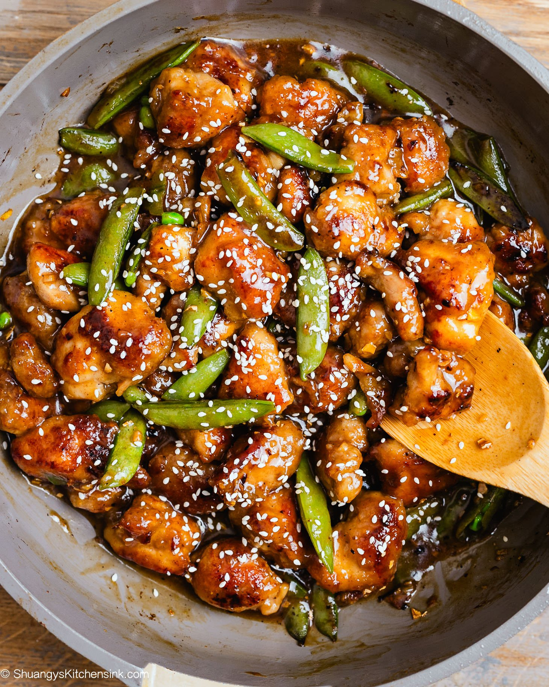

🍜 Asian
⏱️ 30 Mins
🔥 Dinner
Ingredients
- 300g Chicken breast (cubed)
- 1 Red bell pepper, julienned
- 1 Green bell pepper, julienned
- 1 Carrot, thinly sliced
- 100g Broccoli florets
- 2 cloves Garlic, minced
- 1 tsp Fresh ginger, grated
For the Sauce:
- 3 tbsp Soy sauce
- 1 tbsp Honey or brown sugar
- 1 tsp Sesame oil
- 1 tsp Cornstarch
Instructions
- Mix the sauce ingredients in a small bowl and set aside.
- Heat 1 tbsp oil in a large pan or wok over high heat. Add chicken and cook for 5-7 minutes. Remove and set aside.
- Add garlic and ginger to the pan, sauté for 30 seconds.
- Add all vegetables and stir-fry for 5 minutes until slightly tender-crisp.
- Return the chicken to the pan. Pour the prepared sauce over the ingredients and stir for 1-2 minutes until the sauce thickens.
- Serve hot with rice or noodles.